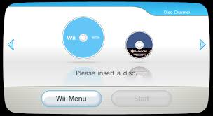
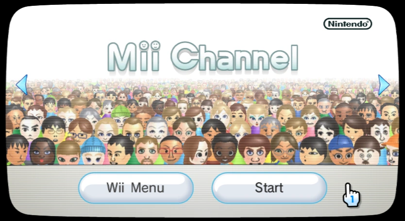
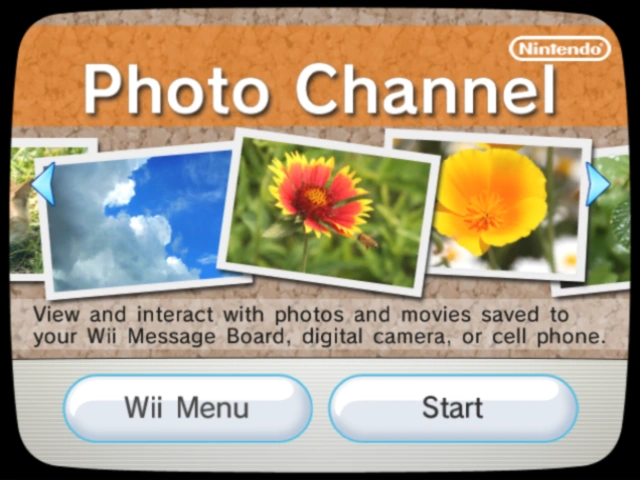
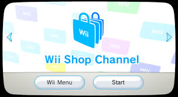
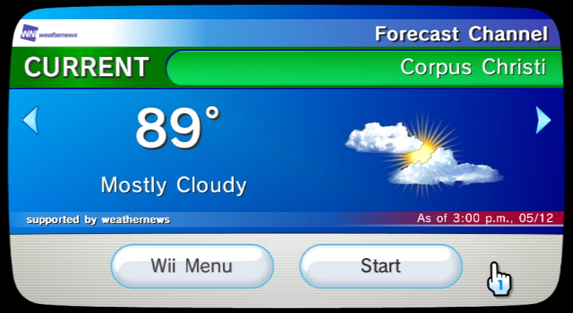
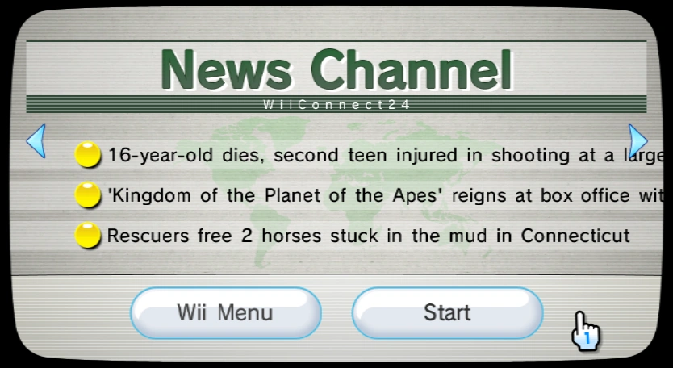
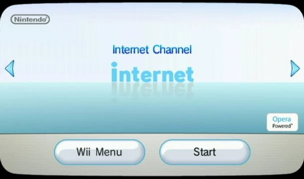
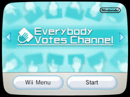

The Disc Channel allowed players to launch Wii and GameCube discs directly.

The Mii Channel let players create and customize their own Mii avatars.

The Photo Channel allowed users to view and edit digital photos and videos.

The Wii Shop Channel gave players access to download games, apps, and Virtual Console titles.

The Forecast Channel provided real-time global weather updates.

The News Channel featured worldwide headlines and articles through WiiConnect24.

The Internet Channel turned the Wii into a web-browsing device.

The Everybody Votes Channel let players vote on fun polls and compare results worldwide.